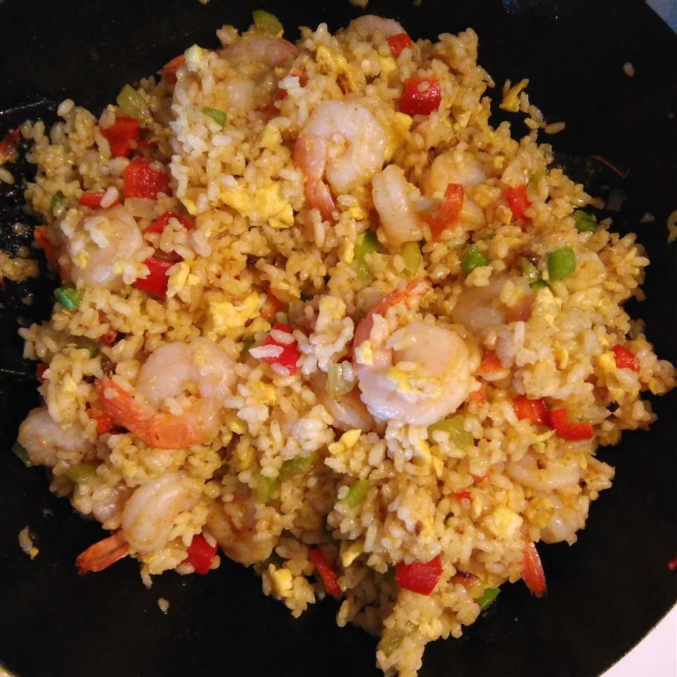

Description:
One of the easiest and versatile meal to make: fried rice. Extremely easy to put together and it comes out tasting delicious. I went with my favorite ingredients of shrimp and egg, but you use just about anything and the same goes for the type of rice used. Enjoy!
Ingredients:
- 1/2 cup of small shrimps
- 1 cup of frozen corn
- 1 1/2 cup of cooked white rice (preferrably right out of the refrigerator or left to cool after cooking)
- 2 eggs
- 1/4 of diced scallions
- Optional addional veggetables (tomatoes, sliced squash, beansprouts, etc)
- A few stripes of dried seaweed
- Sesame oil
- Tsp of the following: bouliion powder, black pepper, salt, and sugar
Instructions:
- Drizzle your choice of cooking oil onto a frying pan and throw in the shrimp on medium heat. Cook for three minutes.
- Add in athe corn and any other veggetables. Stir for four minutes.
- Throw in the rice, add in the seasonings, and cook for around seven minutes.
- Reduce heat and flatten the rice to create an even level. Make a small hold at the center and crack in the two eggs in it. Add additional oil if needed.
- Cook until the eggs and are done and plate the rice out into bowls.
- Top off the rice with scallions, dried seaweed, and sesame oil.